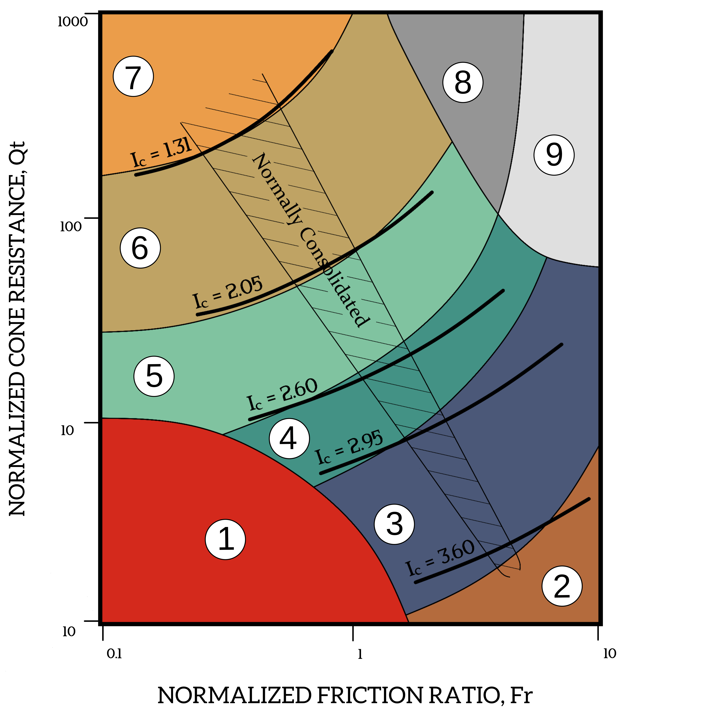

Cone Resistance (qc)
Perlawanan ujung konus yang terbaca selama penetrasi. Nilai qc disajikan terhadap kedalaman untuk menggambarkan perubahan perlawanan tanah.
Pengujian penetrasi tanah secara statik untuk memperoleh profil perlawanan tanah terhadap kedalaman sebagai dasar penyelidikan kondisi bawah permukaan dan evaluasi geoteknik.
Cone Penetration Test (CPT) atau Sondir merupakan metode penyelidikan tanah lapangan dengan menekan konus secara statik ke dalam tanah untuk memperoleh profil perlawanan tanah terhadap kedalaman.
Data pengujian dapat digunakan untuk membantu memahami perubahan karakteristik lapisan tanah, mengidentifikasi lapisan relatif lunak maupun keras, serta menyediakan parameter pendukung untuk evaluasi geoteknik dan fondasi.
Perlawanan ujung konus yang terbaca selama penetrasi. Nilai qc disajikan terhadap kedalaman untuk menggambarkan perubahan perlawanan tanah.
Hambatan gesek yang bekerja pada friction sleeve dan menjadi salah satu parameter dalam interpretasi karakteristik lapisan tanah.
Pembacaan secara berkala terhadap kedalaman memberikan gambaran perubahan kondisi tanah secara relatif menerus pada titik pengujian.
Data CPT dapat menjadi salah satu dasar evaluasi geoteknik awal sesuai kebutuhan proyek dan lingkup analisis yang disepakati.
Pengujian Sondir dilaksanakan untuk memperoleh data perlawanan tanah yang dapat digunakan dalam memahami kondisi bawah permukaan pada titik investigasi.
Memperoleh profil perlawanan tanah terhadap kedalaman.
Mengidentifikasi perubahan dan karakteristik relatif lapisan tanah.
Mengidentifikasi indikasi lapisan tanah relatif lunak atau keras.
Memperoleh data cone resistance dan friction resistance.
Menyediakan data pendukung untuk evaluasi awal fondasi.
Menyediakan data teknis sebagai salah satu dasar pertimbangan perencanaan.
Konfigurasi pengujian berikut merupakan parameter umum yang digunakan dan dapat disesuaikan dengan kebutuhan serta kondisi proyek.
| Jenis Pengujian | Static Cone Penetration Test (CPT / Sondir) |
|---|---|
| Sistem | Mechanical CPT / Dutch Penetrometer |
| Kapasitas Alat | 2.5 ton |
| Jenis Konus | Bikonus / Cone with Friction Sleeve |
| Luas Ujung Konus | 10 cm² |
| Sudut Konus | 60° |
| Luas Friction Sleeve | 100 cm² |
| Interval Pembacaan | Setiap 20 cm |
| Target Kedalaman | Berdasarkan kebutuhan proyek dan kondisi tanah |
| Terminasi Pengujian | Target depth atau refusal sesuai ketentuan teknis |

Kedalaman pengujian ditentukan berdasarkan kebutuhan proyek, target investigasi, kondisi lapisan tanah, serta kemampuan alat.
Sebagai referensi, pengujian dapat direncanakan hingga sekitar 20–30 m per titik atau sampai tercapai kondisi terminasi yang disepakati.
Kedalaman aktual dapat berbeda antar titik karena kondisi tanah tidak selalu seragam. Akses lokasi, kestabilan alat, kondisi permukaan, dan karakteristik tanah dapat memengaruhi pelaksanaan.
Pelaksanaan dilakukan secara berurutan mulai dari persiapan lokasi hingga pemeriksaan dan pengolahan data.
Persiapan lokasi, peralatan, personel, dan kebutuhan keselamatan kerja.
Penempatan dan pengaturan alat agar stabil selama proses penetrasi.
Konus ditekan secara statik ke dalam tanah sesuai metode pengujian.
Pembacaan dan pencatatan parameter perlawanan terhadap kedalaman.
Pemeriksaan kewajaran dan konsistensi data lapangan sebelum pengolahan.
Data disusun menjadi tabel, grafik, dan output teknis sesuai lingkup pekerjaan.
Hasil pekerjaan disusun agar dapat langsung digunakan sebagai data pendukung kebutuhan geoteknik proyek.
Identitas dan lokasi titik pengujian.
Data kedalaman dan hasil pembacaan lapangan.
Cone Resistance (qc) dan friction resistance.
Grafik parameter terhadap kedalaman.
Dokumentasi pelaksanaan lapangan.
Laporan teknis sesuai lingkup pekerjaan.
Data CPT dapat dikembangkan dari sekadar penyajian hasil pengujian menjadi berbagai bentuk interpretasi dan analisis geoteknik sesuai kebutuhan proyek.
Interpretasi digunakan untuk membantu mengenali perubahan perilaku tanah dan membentuk gambaran kondisi lapisan bawah permukaan berdasarkan data CPT.
Arahkan kursor untuk melihat contoh interpretasi
Salah satu pendekatan interpretasi CPT adalah klasifikasi Soil Behaviour Type (SBT) berdasarkan parameter CPT untuk memberikan indikasi perilaku tanah secara relatif.
Klasifikasi SBT merupakan salah satu pendekatan interpretasi. Interpretasi CPT tidak terbatas pada klasifikasi tersebut dan dapat dikembangkan sesuai kebutuhan proyek, kualitas data, kondisi tanah, serta lingkup pekerjaan yang disepakati.
Data CPT dapat digunakan sebagai salah satu dasar untuk berbagai evaluasi geoteknik, termasuk analisis yang berkaitan dengan fondasi apabila termasuk dalam lingkup pekerjaan.
Arahkan kursor untuk melihat contoh analisis
Sebagai contoh, data CPT dapat digunakan untuk membantu mengevaluasi parameter kapasitas fondasi terhadap kedalaman.
Evaluasi geoteknik tidak terbatas pada daya dukung fondasi. Sesuai kebutuhan proyek, scope analisis dapat mencakup parameter dan evaluasi geoteknik lainnya berdasarkan data tersedia, kondisi tanah, jenis fondasi, kebutuhan desain, serta lingkup pekerjaan yang disepakati.
Gambaran struktur laporan yang disiapkan untuk pekerjaan Sondir. Bagian ini memberikan referensi mengenai bentuk dan susunan dokumen tanpa menampilkan isi teknis proyek.
Contoh dokumen mencakup bagian awal laporan dan struktur penyajian dokumen, antara lain:
Isi teknis dan data proyek pada contoh tidak ditampilkan. Dokumen disediakan sebagai gambaran format dan kelengkapan laporan yang akan diterima oleh Pemberi Kerja.
Lihat / Download Contoh LaporanDokumentasi proyek akan ditampilkan setelah pekerjaan dan materi yang dapat dipublikasikan tersedia.
Belum ada proyek yang ditampilkan pada halaman ini. Portfolio akan diperbarui secara berkala berdasarkan pekerjaan yang telah dilaksanakan dan dapat dipublikasikan.
Sampaikan lokasi proyek, jumlah titik, target kedalaman, dan kebutuhan output. Kami akan menyesuaikan lingkup pekerjaan berdasarkan kebutuhan aktual proyek.